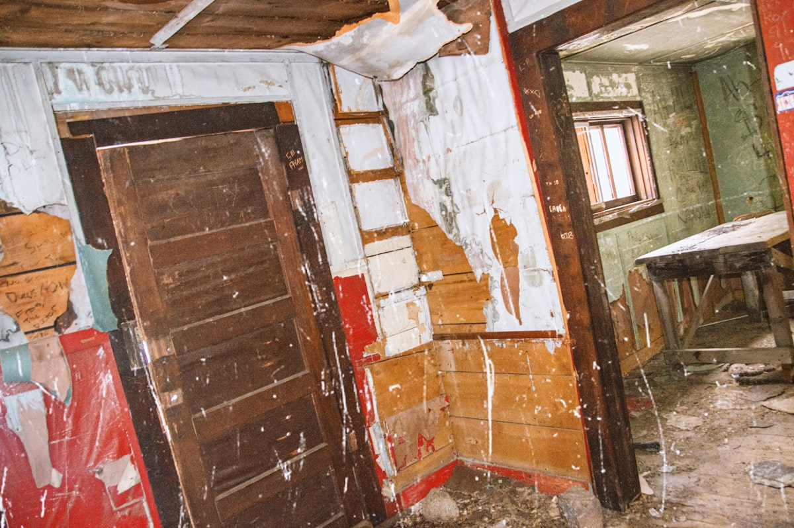

No part of restoring a water-damaged building matters more than structural drying, yet it is also where untrained crews make the most mistakes. After extraction removes the standing water, significant moisture remains trapped in structural materials, including drywall, wood framing, subflooring, concrete, insulation and other building components. This trapped moisture must be scientifically removed through controlled evaporation and dehumidification to prevent the mold growth, wood rot, material degradation and odor problems that develop when structures remain wet.
Psychrometry is the science of how air temperature, humidity and moisture interact, and the IICRC-certified technicians who dry structures for Tallahassee Restoration Co know it well. That knowledge lets them work out where equipment goes, what temperature to hold and how air should move so evaporation is as effective as possible on every job. Different materials (drywall, hardwood, concrete, plaster) dry at different rates and need different approaches to reach acceptable moisture levels without causing additional damage.
Our structural drying process includes daily moisture monitoring with calibrated moisture meters, thermo-hygrometers and thermal imaging cameras. We document moisture readings throughout the drying process, creating a detailed drying log that shows progressive moisture reduction in all affected materials. Those readings guide daily equipment adjustments that keep the drying as efficient as it can be. We call a job dry when every affected material meets the moisture standard in the IICRC S500 guidelines, and never just because a surface feels dry.

Structural Drying, Step by Step
We follow a proven process to ensure every job is completed to the highest standards. Here's how we handle structural drying from start to finish:
Mapping the Moisture
Hygrometers, moisture meters and a thermal camera let us map moisture across each area that was affected. From that map we decide where equipment goes and record our baseline readings.
Equipment Deployment
Guided by the moisture map, we place high-velocity air movers and commercial LGR dehumidifiers where they will do the most good. The materials being dried determine how we set the airflow and the temperature.
Daily Monitoring
A technician comes back every day, reads moisture at each monitoring point, moves equipment as needed and logs the progress. We keep you posted on how the timeline looks.
Verifying the Dry Standard
When moisture readings reach acceptable levels throughout all affected materials, we document final readings, remove equipment and certify that your property has reached dry standard.
Ready to Solve Your Structural Drying Problem?
Call Tallahassee Restoration Co for fast, reliable service.
Call (513) 740-9846 NowStructural Drying Prevention Tips
A little prevention goes a long way in avoiding expensive restoration emergencies. Here are our expert recommendations:
- Plan for daily access so readings can be taken and equipment adjusted
- The dehumidifiers and air movers should run around the clock until our technician takes them out
- Leave equipment where the technician placed it, since positions are based on the moisture map
- Moisture can sit deep in a material whose surface feels dry, so rely on the meter readings
- Tell your restoration technician immediately if you notice new wet areas or odors during drying
- Do not place personal items on top of drying equipment or block the airflow from air movers
Structural Drying: What Homeowners Ask
How to Tell You Need Structural Drying
Catching these issues early helps you avoid costly problems and protect your property. Watch for these telltale signs that professional help is needed:
- Wall finishes that start to peel or bubble in the days after water damage
- Trapped moisture often announces itself with a persistent musty odor after cleanup
- Wood flooring with boards that cup, crown or pull apart
- After water damage, a meter shows elevated moisture in the floor, wall or ceiling
- Earlier water damage that was never professionally dried and now shows deterioration
- Materials that feel damp or cool to the touch even after visible water is gone
- Wallboard with water stains, puffiness or a spongy feel
Act Before It Gets Worse
What seems like a minor issue today can turn into a major expense tomorrow. If you notice any of these signs, contact Tallahassee Restoration Co at (513) 740-9846 for a prompt evaluation.
Not Sure What You Need?
Our experienced technicians can assess your situation and recommend the best solution.
Call (513) 740-9846 NowDIY vs. Professional Structural Drying
Some simple tasks are suitable for DIY, but most water damage work benefits from professional tools, training, and experience. Here's a comparison:
| Factor | DIY Approach | Professional Service |
|---|---|---|
| Over-Drying | Over-drying can damage wood floors | Settings adjusted for hardwood, drywall, concrete, plaster |
| Equipment | Household fans plus a home dehumidifier | High-velocity air movers with LGR dehumidifiers |
| Method | Guessing when things are dry | Psychrometric calculations optimize drying |
| Monitoring | Touch test, unreliable | Calibrated meters with daily readings |
| Records | Nothing on paper to show it dried | A full drying log for your insurer |
Why Structural Drying Is Not a DIY Job
There is real science behind structural drying, which is why guessing does not work. Secondary mold damage most often traces back to someone who put down fans and hoped things would dry. To do it professionally, you have to know how each material takes on and gives up moisture, work out the grain depression, meaning the moisture removal capacity, for the job, and check progress every day. Get it wrong in one direction and mold feeds on leftover moisture, get it wrong in the other and wood or similar materials are damaged by over-drying.
Professional drying equipment is not a bigger version of what stores sell, it is a different kind of machine. A commercial LGR dehumidifier, short for low-grain refrigerant, pulls 10 to 20 times as much moisture out of the air as a residential one, while high-velocity air movers set up the exact airflow that speeds evaporation off structural surfaces. Machines like these cost a great deal and take training to use well, which explains why professional results are so much better than a do-it-yourself effort.
Talk to a Structural Drying Expert
Don't let water damage problems get worse. Call Tallahassee Restoration Co now for prompt, professional service.
Get Help: (513) 740-9846